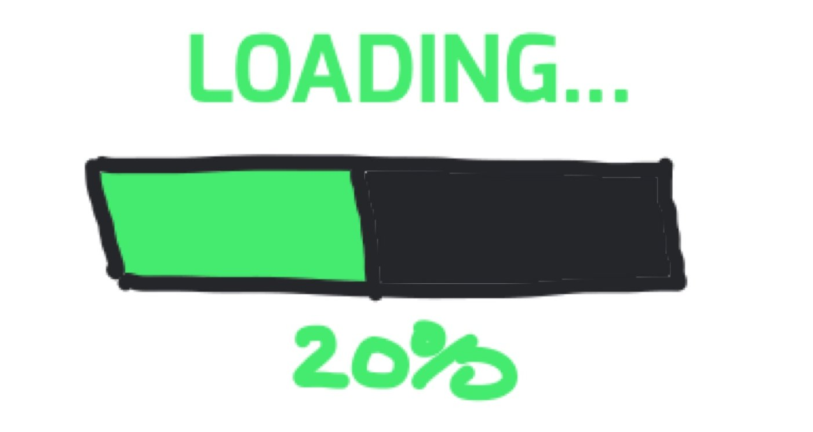

Ceci est ma onzième Séance.
Dans cette séance, je montre un exemple concret de Carte Mentale sur un cours de Grammaire Française sur les emplois du Passé Simple et de l'Imparfait. C'est un sujet extrêmement difficile et abstrait pour les élèves de 6ème. D'autant plus que le tableau est une forme de représentation très utile quand il s'agit de classer, de répertorier mais qui présente des désavantages pour notre cerveau quand il s'agit de l'apprendre : il y a trop de ressemblances. Ici encore, l'utilisation de la Carte Mentale (spatialisation de l'information) et de ses pictos va permettre une mémorisation de l'information. En mettant la forme au service du fond, elle va permettre de mettre en valeur (et donc d'attirer l'attention de notre cerveau) sur les ressemblances mais aussi sur les différences.
La première étape pour un élève de Collège va consister à essayer de ranger en catégories les différents emplois de l'Imparfait et du Passé Simple. Ces catégories seront les prises, comme en escalade, qui permettent à votre cerveau de mémoriser ce tableau. Comme il est d'usage dans un tableau, il y a une correspondance entre les lignes ce qui fait que si vous trouvez une catégorie pour l'Imparfait, vous trouvez aussi une catégorie pour le Passé Simple ! On peut repérer 3 grosses catégories dans ces emplois : les FAITS, le RÉCIT et les ACTIONS. Ces 3 catégories vous donneront les branches principales de votre Carte Mentale. Vous remarquerez que sur mon brouillon que j'ai commencé à trouver des pictos dans la marge et que je n'avais pas d'idée de pictogramme, au premier abord, pour FAIT...C'est une situation courante ! Même avec une base de pictos que je connais par cœur, il m'arrive de ne pas en avoir pour certains thèmes. Pas de panique : nous en trouverons bien un en cherchant sur Internet...
Ensuite, on peut se poser la question du cœur de carte. Au dessus du tableau, on voit un signe ≠. Ce signe est tout petit alors qu'il est fondamental ! Il mérite donc que l'on mette la forme au service du fond : en ce qui me concerne, j'ai opté pour deux gants de boxe qui s'entrechoquent comme coeur de carte. Cela montre bien l'opposition entre l'Imparfait et le Passé Simple. Ça ne fait pas partie des pictogrammes habituels mais ça n'est pas trop difficile à dessiner et en plus, l'utilisation de stylos FRIXION permet de s'y reprendre à plusieurs fois...D'autre part, cela permettra de mettre en opposition les 2 temps verbaux tout en insistant avec des branches identiques en vis-à-vis sur les ressemblances (catégories similaires).
En ce qui concerne le choix du picto FAITS, lorsque je le fais tourner dans ma tête, je pense à un journal dont le rôle est tout de même de rapporter les FAITS. Mon manque d'inspiration du moment peut être compensé facilement par une recherche sur un moteur de recherche : si vous tapez picto journal et que vous choisissez images dans le moteur de recherche, vous y trouvez plusieurs idées À vous ensuite de choisir le picto qui à la fois vous inspire et à la fois est à votre portée...

Vous remarquerez, toujours dans l'idée que «la forme est au service du fond», que j'ai choisi de dessiner les branches principales ACTION avec un motif rappelant le picto ACTION qui est un clap de cinéma...
Je tiens aussi à préciser, qu'il faut faire confiance aux élèves car ils ont souvent de très bonnes idées ! Par exemple, 2 élèves m'ont proposé des idées bien meilleures que les miennes pour le picto «EN COURS/ EN CONSTRUCTION». Ils m'ont proposé une barre de progression de téléchargement ce qui pourrait donner cela : «PROGRESSION» 
Je tiens à remercier chaleureusement ma collègue Mme ROBLOT pour sa collaboration fructueuse et son aimable autorisation à montrer le contenu de son cours. Je la sais sensible à d'autres formes d'apprentissage et notamment, les techniques de Pensée Visuelle... C'est une véritable satisfaction de cotoyer des collègues qui veulent faire avancer les choses et s'investissent pour le bien de leurs élèves.